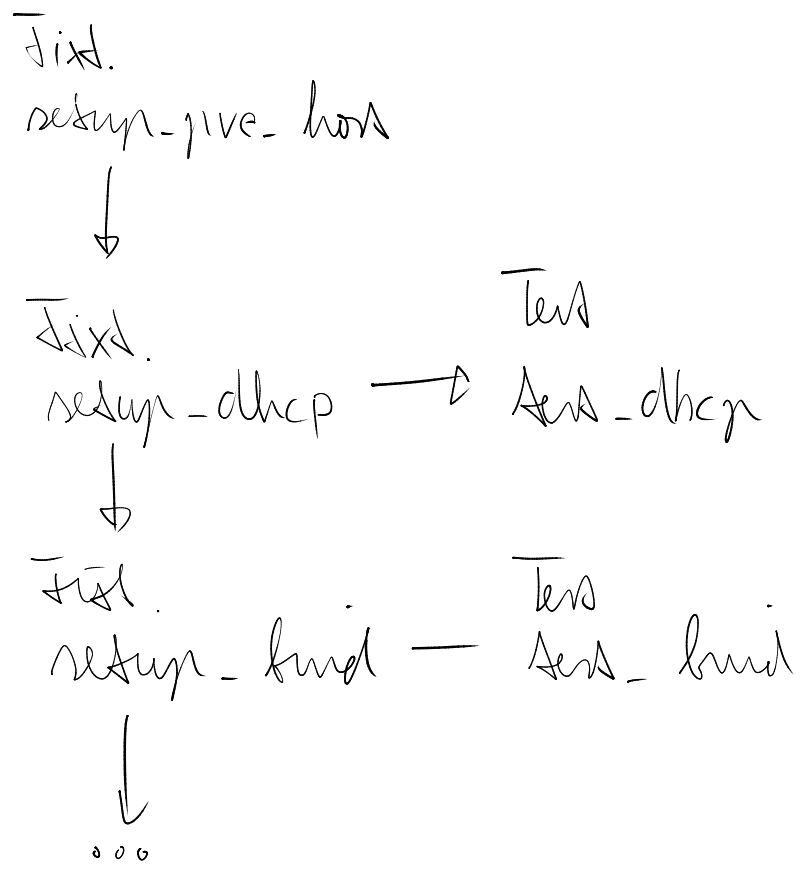

Test Driven Development
For development you will need a dedicated proxmox cluster (a small one will suffice), and another dedicated vlan. The testing suite deploys and configures a proxmox cloud with locally build artifacts.
Avahi mdns
Make you test proxmox cluster also discoverable via avahi as described in the bootstrap section and setup reflector/repeaters as required.
E2E Architecture
Pytest is our core testing framework, in combination with ansible_runner and the terraform cli we build and test the entire collection end to end.
Our pytest fixtures contain the core setup of the cloud. And from them branch out one or more tests at every level. The fixtures are called only once (pytest session scope).

Target run pytests against for example test_bind to restrict fixture execution.
Development
- add this to your
~/.ssh/config, ssh validation can get annoying when often recreating containers and vms.
Host *
StrictHostKeyChecking no
UserKnownHostsFile /dev/null
- configure your docker
/etc/docker/daemon.jsonto accept the local registry for insecure http pushes, followed bysudo service docker restart
{
"insecure-registries": ["192.168.1.0/24"]
}
- install
direnvand activate it in your local profile (addeval "$(direnv hook bash)"to .bashrc) - create a
pve-cloudfolder and checkout all the repositories you want to make changes to, if you checkout the ansible collections they have to be underansible_collections/pve/ - create a dedicated venv for pve cloud development
python3 -m venv ~/.pve-cloud-dev-venvand activatesource ~/.pve-cloud-dev-venv/bin/activate, install the default ansible dependency from the bootstrap section - create a test environment config yaml (you can find the schema definition in the src folder of the pytest-pve-cloud repository) - forward to the test domain your main dns (you can use
bind_forward_zonesin the pve cloud inventory if your main infrastructure already is a pve cloud) - create a
.envrcfile with env variables stored for development
export TDDOG_LOCAL_IFACE= # iface name of you local net ip `ip -4 addr show`. The deployed infrastructure needs your developer machines ip for pulling.
export PVE_CLOUD_TEST_CONF=$(pwd)/test-env-conf.yaml
export ANSIBLE_COLLECTIONS_PATH=$(pwd)
the created local dir might look like this:
ansible_collections/pve/
cloud
py-pve-cloud
pve-cloud-controller
.envrc
test-env-conf.yaml
- install build essentails
sudo apt install build-essential python3-dev(or your distros equivalent) - install ansible as described in the bootstrap section and also run the control node setup
- launch local registries for watchdog rebuilds and fast deployment
docker run -d -p 5000:5000 --name pxc-local-registry registry:3 # local docker registry
docker run -d -p 8088:8080 --name pxc-local-pypi pypiserver/pypiserver:latest run -P . -a . # local pypi registry without auth
docker run -d --name pxc-local-redis -p 6379:6379 redis:latest # redis broker for triggering dependent builds
- run
tddog --recursivefrom your top level createdpve-cloudfolder. This will monitor src folders, rebuild artifacts and their dependants and also runpip install -e .on libraries that are needed locally. - run the e2e tests:
pytest -s tests/e2e/ --skip-cleanup
# you can also target specific steps
pytest -s tests/e2e/test_cloud.py::test_bind --skip-cleanup
If you want to develop the terraform provider you need golang installed.
Kubeconfig access
If you passed --skip-cleanup to pytest, the kubespray tests will write a .test-kubeconfig.yaml file you can use for lens access to the testing cluster.
VSCode Pytest debug
if you want to attach a debugger to the tests you can use the vscode python debug extension.
create a .testenv file with the same variables as the .envrc alongside it in your pve-cloud folder
the settings.json for vscode python debug should look something like this:
{
"python.testing.pytestArgs": [
"-s",
"tests/e2e",
"--skip-cleanup"
],
"python.testing.unittestEnabled": false,
"python.testing.pytestEnabled": true,
"python.testing.cwd": "${workspaceFolder}",
"python.envFile": "${env:HOME}/pve-cloud/.testenv", // adjust it to the path
"python.defaultInterpreterPath": "${env:HOME}/.pve-cloud-dev-venv/bin/python"
}
Also select your python interpreter to the dev environment bin/python in the vscode command palette.
Multi-Root Projects
If you want to develop with multiple pve-cloud repositories at the same time you can create a pve-cloud.code-workspace file top folder.
Open this file via vscode File/Open Workspace from File...
{
"folders": [
{ "path": "."},
{ "path": "ansible_collections/pxc/cloud" },
{ "path": "pve-cloud-tf" }
],
"settings": {
"python.defaultInterpreterPath": "${env:HOME}/.pve-cloud-dev-venv/bin/python"
}
}
This loads the e2e tests from both projects via their settings.json file.